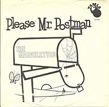

After its inception in 1959, the Motown Record Company thrived as an example of an independently run and
successful Black business that produced over 500 chart-topping hits even against the backdrop of one of the most
turbulent and movement driven times in US history. The music being produced behind the doors of a two-story house
where founder Berry Gordy hung the sign, “Hitsville USA,” encouraged America’s youth, urging them to look beyond
the racial divides destroying the United States and to simply sing and dance together in a time where the theme of
unity was becoming increasingly important.
To the music fans of the 60s, the sound of Motown became one of the most recognizable and significant musical
movements. Producing legends such as Marvin Gaye, Diana Ross, Stevie Wonder, The Temptations, and the Jackson
Five, Motown Records competed with the “British Invasion” and “the Protest Movement,” in 1960s music. But what
made Motown so successful? Was it the unique use of big band and gospel music that made it stand apart from the
rest of the music industry? Or was it’s placement in Detroit and relationship to the Civil Rights Movement that
made Motown so memorable? Motown is often said to have had little or no impact on the political and social
revolution of the time because Motown did not produce “message music.” We argue, though, that Motown
embodied one of the main principles the Civil Rights Movement preached most: black success and independence. Using
information gathered by Matthias Mauch, Robert M. MacCallum, Mark Levy and Armand M. Leroi for their article, “The
evolution of popular music: USA 1960–2010,” where they tracked popular music across a span of 50 years, we aim to
analyze the hits produced by Motown Records and examine the sound that made up Motown, and what this meant for the
success of Black people in the United States as they fought for their right to be heard and seen.
Many historians who have touched on the significance and impact of Motown often refer to Berry Gordy’s methods of
appealing the “Motown sound” of big band and gospel music to both Black and white audiences. Author and historian
David Brackett proposed that the success was formulaic and had much to do with production that mirrored an
assembly-line: if a song was ranked high on the R&B charts, it meant that African American DJs were playing the
songs on African American radio stations to a predominantly African American crowd. If a song was high up on the
Pop charts, however, it meant that all races were listening to it. For Berry Gordy and Motown, it meant that white
people were listening to their music. According to historians, Gordy was so focused on ensuring records sold that
“The Marvelettes’ Please Mr. Postman had only a line drawing of a mailbox on the cover; Bye Bye Baby
by Mary Wells showed only a love letter…Meet the Temptations had photographed the group so darkly
against a dark background that they were almost in silhouette.” It’s believed that by hiding the race of the
artists, white people more likely to buy the records.

The Motown image and sound was structured specifically to be appealing to the masses, one that made it seem like
Berry Gordy was pulling away from any interaction from the Civil Rights Movement. And while Gordy never publicly
made his intentions of supporting the goals of the Movement, the creation and success of his record label hit
several of the targets its leaders were aiming for: Black success and economic independence as shown by the trends
in the music.